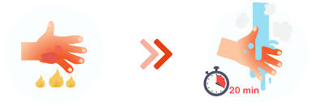
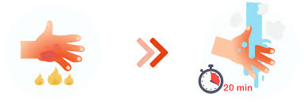

1: Cool the burn:
- Run the burned area under cool water (15-25°C) for at least 10 minutes to limit the damage.
- Rinse all affected areas of the body.
- Water will immediately relieve the pain. If possible, remove rings, watches, and bracelets. 
- Run the burned area under cool water (15-25°C) for at least 10 minutes to limit the damage.
- Rinse all affected areas of the body.
- Water will immediately relieve the pain. If possible, remove rings, watches, and bracelets. 
2. Call for help:

3: Protect the burn:
Cover it with a sterile dressing or clean cloth to prevent infection.

Cover it with a sterile dressing or clean cloth to prevent infection.
4. Do not pop blisters:
Leave them intact to prevent infection.

Leave them intact to prevent infection.
5. Avoid home remedies:
Do not apply butter, oil, or cream to the burn.

Do not apply butter, oil, or cream to the burn.
6. Apply specialized creams:

7. Follow the complete diagram:
Be cautious!!!.
Be cautious!!!.